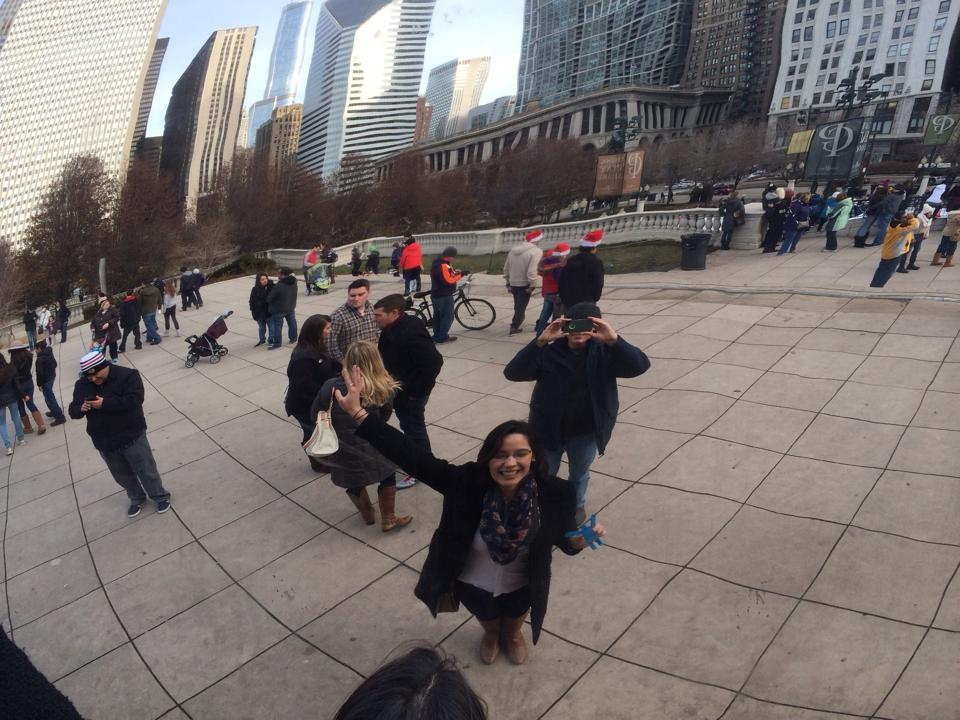

Independent Contractor
June 2015 to Present
I spend about an hour each week working with Mighty Music Publishing, a creator and distributor of
music memory materials for 3rd-5th graders.
- Created a sales system using VBA, Excel formulas, and pivot tables to
monitor incoming orders, shipments, and payments. My work enabled the company's
vertical expansion into distribution.
- Connected that sales system to automated Word templates for packing slips and invoices,
saving time, ensuring accuracy, and creating a branded feel.
- Wrote the Standard Operating Procedure document for easy task transfer.
- Setup the filing system, ensuring unique and complete customer records.

MMS Manager
June 2012 to April 2015
I worked with LiftFund, a business lender, as the MMS Manager
My responsibilities and favorie projects included:
- Project management for enhancements to Microsoft Dynamics CRM, such as integrating with add-ons and a third party loan servicing software.
- Data migration from CRM 2008 to 2011
- Sales, gathering requirements, new client training, and onboarding
- Created a library of training videos using Camtasia
- Quality assurance, testing, and troubleshooting
- Created the process for managing sales, writing client agreements, onboarding, and customer training. This saved time, ensured quality, and legally protected the company from undue expectations.
- Served on the committee that selected projects to enhance customer experiences and reduce overhead costs.
Education
Expected to Complete Master's in May 2017
University of Portland, Portland, OR
Master of Science in Operations and Technology Management
Completed Coursework:
- R Programming and Simulation
- Power Problem Solving with VBA
- Business Analytics
- Decision Modeling
- Production and Service Operations
- Supply Chain Management
Upcoming Coursework:
- Database Management and Design
- Strategic Management
- Project Management
- Process Analysis and Design
I am very excited to continue exploring data science and expand my expertise in Business Analytics.
I love how gathering data connects to consumer behavior, has the power to directly reduce costs,
and help a company adapt as it learns more about the changing market.